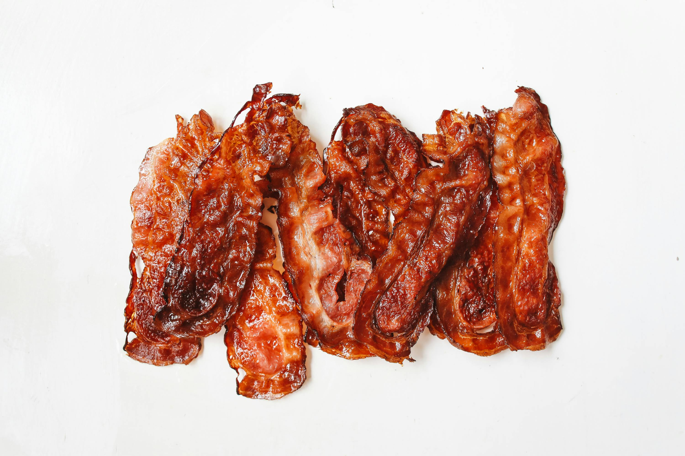

Home
Bacon for the Family or a Crowd

Photograph by
Polina Tankilevitch
Description
A delicious addition to any breakfast!
The original recipe is by JOYCE, which you can find at
www.allrecipes.com
Ingredients
- 1 pound of thick sliced bacon
Steps
- Preheat your oven to 350°F (175°C)
- Line a baking sheet with aluminum foil
-
Align the bacon strips in a single layer on the prepped baking sheet
with the edges either touching or slightly overlapping
-
Bake in the pre-heated oven for 10–15 minutes, or until it reaches
the desired degree of doneness
-
Remove the bacon from the baking sheet with tongs or a fork, and drain
on a plate lined with a paper towel